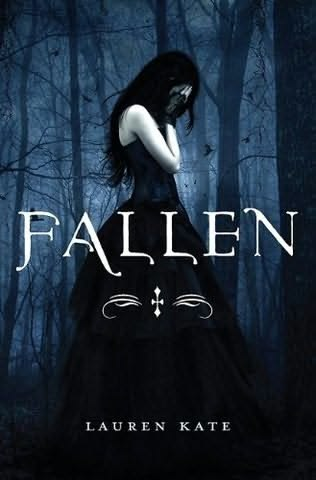

My favorite story is called Fallen and it is by Lauren Kate. Its about a young girl who is sent to live at a reform school that is named Sword and Cross. She was sent there after she was thought to have killed a classmate. while she is there she meets a guy named Daniel. She feels a connection towards him and as the story goes on you learn what there connection is.